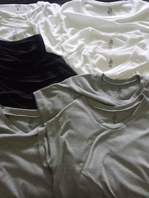

CLOTHING

These start as a vintage Levi's Denim Trucker Jacket. They are hand distressed, dyed, and painted.
$125

All T-Shirts are custom designed and hand sewn. They are made in various different styles, sizes, and fits.
These are currently all sold out, but a new batch is on my agenda. As these are all custom made, one-offs are always possible. Please contact me if you are interested.
SOUNDCLOUD
BETTERIN30DAYS